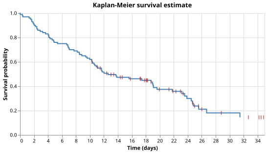

Survival Analysis
The Problem
- In a clinical trial some patients experience the event of interest (death, relapse, recovery) while others leave the study before the trial ends or are still event-free when the data are analysed.
- An observation where the true event time is unknown because we only know the patient survived past a certain point is called right-censored.
- Ignoring censored observations or treating them as events both bias the estimate of survival time.
- This lesson builds an exponential survival model, showing how a naive estimate is biased and how maximum-likelihood estimation corrects for censoring.
The Survival Function
- The survival function $S(t)$ is the probability that a randomly chosen individual survives past time $t$:
$$S(t) = P(T > t)$$
- $S(0) = 1$ (everyone is alive at the start) and $S(t)$ is non-increasing.
- For an Exponential distribution with rate $\lambda$, the survival function is:
$$S(t) = e^{-\lambda t}$$
- As $t \to \infty$, $S(t) \to 0$; the curve decays smoothly rather than dropping in steps.
- The mean survival time is $\mu = 1/\lambda$; the median is $(\ln 2)/\lambda \approx 0.693/\lambda$.
Generating Synthetic Data
- Each patient's true event time is drawn from Exponential($\mu = 20$ days, i.e. $\lambda = 1/20$).
- An independent censoring time drawn from Uniform($10$, $35$) days simulates patients who leave the study at different points.
- The observed time is whichever comes first;
observed = 1if the event came first.
SEED = 7493418 # RNG seed for reproducibility
N_PATIENTS = 100 # number of patients in the study
MEAN_SURVIVAL = (
20.0 # mean event time drawn from Exponential(scale=MEAN_SURVIVAL) in days
)
# Censoring time drawn from Uniform(CENSOR_MIN, CENSOR_MAX): patients followed up for a random
# duration, with the study ending if the event has not yet occurred.
CENSOR_MIN = 10.0 # minimum follow-up time (days)
CENSOR_MAX = 35.0 # maximum follow-up time (days)
def make_survival_data(
n=N_PATIENTS,
mean_survival=MEAN_SURVIVAL,
censor_min=CENSOR_MIN,
censor_max=CENSOR_MAX,
seed=SEED,
):
"""Return a Polars DataFrame with columns 'time' and 'observed'.
Each patient has a true event time drawn from Exponential(scale=mean_survival).
An independent censoring time is drawn from Uniform(censor_min, censor_max).
The observed time is whichever comes first.
'observed' is 1 if the event occurred before censoring, 0 otherwise.
"""
rng = np.random.default_rng(seed)
true_event_times = rng.exponential(scale=mean_survival, size=n)
censoring_times = rng.uniform(low=censor_min, high=censor_max, size=n)
observed = (true_event_times <= censoring_times).astype(int)
times = np.minimum(true_event_times, censoring_times)
return pl.DataFrame({"time": times, "observed": observed})
A Naive Estimate
- A first attempt: use only the patients whose event was actually observed, ignore the rest.
- For an Exponential distribution, the mean of uncensored times estimates $\mu$, giving:
$$\hat{\lambda}_{\text{naive}} = \frac{1}{\bar{t}_{\text{uncensored}}}$$
Patient A is censored at day 10. Patient B has an event at day 25. If we compute the naive rate using only uncensored patients, which of these is true?
- Patient A's time of 10 days is included in the mean.
- Wrong: the naive estimate discards censored patients entirely.
- Patient B's time of 25 days raises the mean, lowering $\hat{\lambda}_{\text{naive}}$.
- Wrong: a longer uncensored time raises the mean, which lowers the rate estimate — the direction is correct but this is not a problem if all observations are uncensored.
- Dropping patient A removes a long survival time from the calculation, inflating $\hat{\lambda}_{\text{naive}}$.
- Correct: censored patients tended to survive longer; removing them makes the mean look smaller and the rate look higher.
- Dropping patient A has no effect because censored patients never experienced the event.
- Wrong: even though the event did not occur, the censored time still carries information about how long the patient survived.
Why the Naive Estimate Is Biased
- Censored patients were still alive at their last observation — they survived at least that long.
- Dropping them removes longer-than-average survival times from the calculation.
- The remaining uncensored times have a shorter mean, so $\hat{\lambda}_{\text{naive}}$ is too high.
- The bias grows with the censoring fraction: the more patients are censored, the worse the estimate.
Put these reasoning steps about censoring bias in the correct order.
- Censoring occurs because a patient's follow-up ends before the event
- Censored patients were alive at their last observation, so their true event time is longer
- Dropping them leaves only patients who tended to have shorter survival times
- The mean of the remaining times underestimates $\mu$, so the rate is overestimated
A Corrected Estimate
- The maximum-likelihood estimate (MLE) of $\lambda$ uses all observed times, not just events.
- The log-likelihood for $n$ patients with times $t_i$ and event indicators $\delta_i$ is:
$$\ell(\lambda) = \sum_{i=1}^{n} \left[ \delta_i \ln \lambda - \lambda t_i \right]$$
- Setting $d\ell/d\lambda = 0$, where $d = \sum_i \delta_i$ is the total number of events:
$$\frac{d}{d\lambda} \left( d \ln \lambda - \lambda \sum_i t_i \right) = \frac{d}{\lambda} - \sum_i t_i = 0$$
- Solving gives:
$$\hat{\lambda} = \frac{d}{\sum_i t_i}$$
- Every patient's time contributes to $\sum_i t_i$, whether or not the event occurred.
- A censored patient contributes time up to the point they were last observed: this is called person-time and captures the information that the patient was alive throughout that period.
The Empirical Survival Curve
- To visualize how well the model fits, plot the fraction of uncensored events occurring after each time.
- Sort the uncensored event times
- At the $i$-th event time (0-indexed), $(n - i)/n$ events occur at or after that time
- This gives a non-increasing step function that starts at 1 and reaches $1/n$ at the last event
- Overlay the exponential curves $e^{-\hat{\lambda}_{\text{naive}} t}$ and $e^{-\hat{\lambda} t}$ to see which fits the empirical curve more closely

Testing
naive_rateshould return $1 / \bar{t}_{\text{uncensored}}$; compute the mean by hand for a small dataset.corrected_rateshould return $d / \sum t_i$; again, hand-check with a small dataset.- When censored observations exist,
naive_ratemust exceedcorrected_rate— the bias should be detectable on the full 100-patient synthetic dataset. empirical_survivalmust return fractions in $[0, 1]$ that are non-increasing.- When all observations are uncensored, the two rates must agree: with $\delta_i = 1$ for all $i$, $d / \sum t_i = n / \sum t_i = 1 / \bar{t} = \hat{\lambda}_{\text{naive}}$.
import pytest
from generate_survival import make_survival_data
from survival import naive_rate, corrected_rate, empirical_survival
def test_naive_rate_is_reciprocal_of_uncensored_mean():
# Only the two uncensored times (2.0 and 4.0) contribute; mean = 3.0, rate = 1/3.
times = [2.0, 4.0, 10.0]
observed = [1, 1, 0]
assert naive_rate(times, observed) == pytest.approx(1.0 / 3.0)
def test_corrected_rate_is_events_over_total_time():
# d = 2, sum(t) = 2.0 + 4.0 + 10.0 = 16.0, rate = 2/16 = 0.125.
times = [2.0, 4.0, 10.0]
observed = [1, 1, 0]
assert corrected_rate(times, observed) == pytest.approx(2.0 / 16.0)
def test_naive_rate_exceeds_corrected_when_censored():
# Censored patients survived longer than average; dropping them inflates the naive rate.
# With any dataset that has at least one censored observation, naive > corrected.
df = make_survival_data()
times = df["time"].to_list()
observed = df["observed"].to_list()
assert naive_rate(times, observed) > corrected_rate(times, observed)
def test_empirical_survival_fractions_non_increasing_and_bounded():
df = make_survival_data()
times = df["time"].to_list()
observed = df["observed"].to_list()
_, fractions = empirical_survival(times, observed)
# All fractions must be in [0, 1].
assert all(0.0 <= f <= 1.0 for f in fractions)
# Fractions must be non-increasing.
for a, b in zip(fractions, fractions[1:]):
assert a >= b
def test_corrected_equals_naive_when_no_censoring():
# When every observation is an event, d/sum(t) == 1/mean(t) == naive_rate.
times = [1.0, 2.0, 3.0, 4.0]
observed = [1, 1, 1, 1]
assert naive_rate(times, observed) == pytest.approx(corrected_rate(times, observed))
Exponential survival analysis key terms
- Right-censoring
- An observation where the event has not occurred by the end of follow-up; the true event time is unknown but greater than the censoring time
- Survival function $S(t)$
- The probability that a randomly chosen individual has not yet experienced the event by time $t$; for an Exponential with rate $\lambda$ this is $e^{-\lambda t}$
- Person-time
- The total time each individual was observed, summed across all individuals; censored patients contribute time up to their last observation, so $\sum_i t_i$ captures all available information
- MLE rate $\hat{\lambda}$
- $d / \sum_i t_i$: events divided by total person-time; accounts for censored observations by including their follow-up time in the denominator
- Naive bias
- Dropping censored patients inflates $\hat{\lambda}$ because censored patients tended to survive longer; the bias grows with the censoring fraction
The Kaplan-Meier estimator handles censored observations more carefully using conditional probabilities at each event time, and does not assume an exponential distribution; it requires more advanced statistics.
Exercises
Do the math
-
The survival time of a population follows an Exponential distribution with rate $\lambda = 1/20$. Using $S(t) = e^{-\lambda t}$, compute $S(20 \ln 2)$ to three decimal places.
-
Three patients have times $[2, 4, 10]$ with event indicators $[1, 1, 0]$. Compute $\hat{\lambda} = d / \sum t_i$ to three decimal places.
Confidence interval for the rate
The asymptotic standard error of $\hat{\lambda}$ is $\hat{\lambda} / \sqrt{d}$.
Add a function rate_ci(times, observed, alpha=0.05) that returns a 95% confidence interval
using a normal approximation, and verify that the interval contains the true rate on the
synthetic dataset.
Effect of censoring fraction
Generate datasets with censoring windows that produce 10%, 30%, 50%, and 70% censoring fractions. For each, compute the naive and corrected rates and plot both against the true rate. At what censoring fraction does the naive estimate become seriously misleading?
Weibull extension
The Weibull distribution generalises the Exponential: $S(t) = e^{-(\lambda t)^k}$ where $k = 1$
recovers the Exponential. Derive the log-likelihood, implement MLE for both $\lambda$ and $k$
using scipy.optimize.minimize, and compare the Weibull and Exponential fits on the synthetic data.
Two-group comparison
Generate two groups with true rates $\lambda_1 = 0.04$ and $\lambda_2 = 0.06$. Estimate the corrected rate for each group and test whether the ratio $\hat{\lambda}_1 / \hat{\lambda}_2$ differs significantly from 1 using the fact that $\ln(\hat{\lambda}_1 / \hat{\lambda}_2)$ is approximately normal with standard error $\sqrt{1/d_1 + 1/d_2}$.